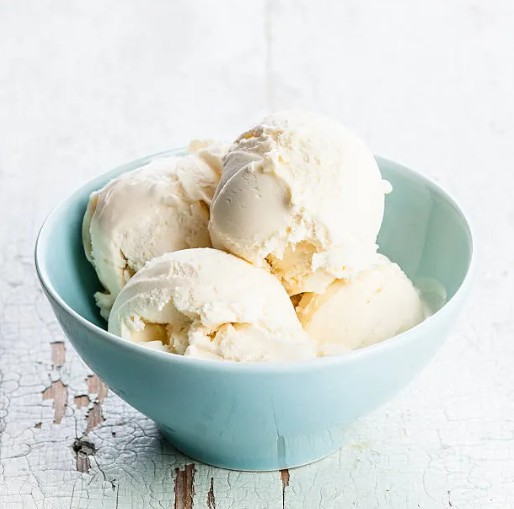

Strawberry Banana Ice Cream
Homemade ice cream with fresh strawberry and banana.
Ingredients
15 Strawberries
1/2 cup vanilla yogurt
1 cup whipping cream
6 tablespoons condensed milk
Instructions
1. Slice the strawberries
2. Blend the strawberry slices and vanilla yogurt
3. Add the whipping cream and condensed milk to a bowl and beat for 2 minutes
4. Add the blended strawberry then beat for 5 minutes
5. Poor mix into a glass baking pan and cover
7. Freeze for 4 hours
8. Scoop into balls and serve with toppings